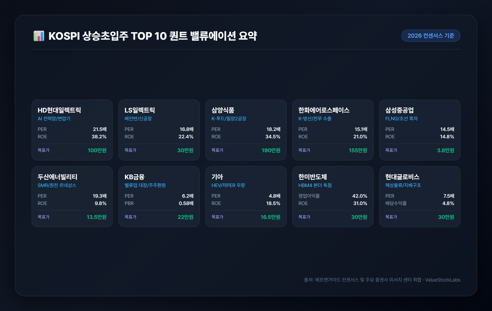
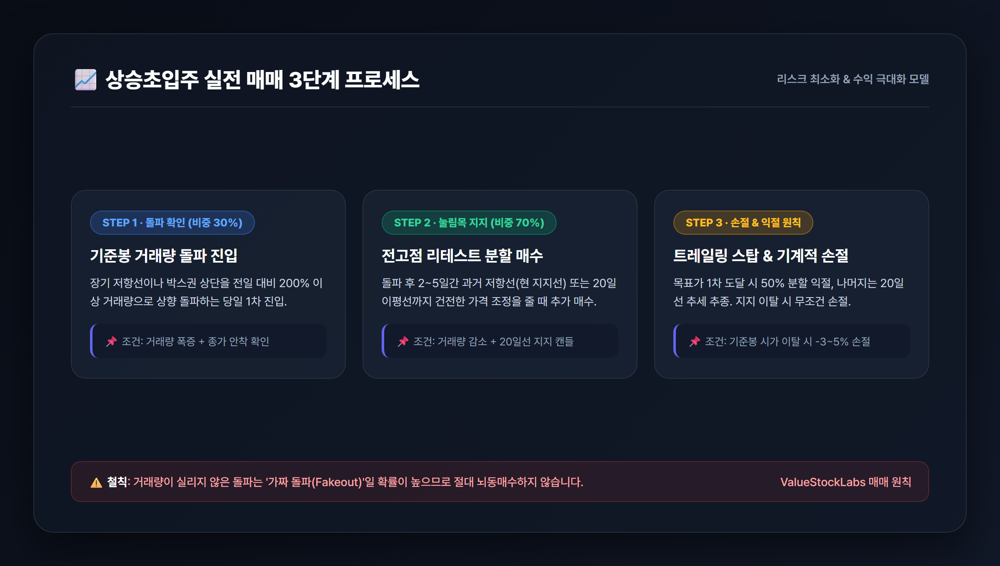

1. 상승초입주를 포착하는 3대 핵심 기술적 조건
주식 시장에서 '상승 초입'이란 오랜 기간 이어진 횡보나 하락 추세를 끝내고, 새로운 대세 상승 파동을 시작하는 최적의 진입 구간을 의미합니다. 이미 주가가 2~3배 폭등한 이후 추격 매수하는 위험을 피하고, 바닥권에서 안전마진을 확보한 상태로 높은 수익률을 기대할 수 있는 시점입니다.
2026년 증권가 퀀트 시스템과 전문 트레이더들이 공통적으로 주목하는 상승초입주의 3대 기술적 판별 공식은 다음과 같습니다.
- 이동평균선 정배열 전환 및 수렴 후 상방 발산: 20일 이동평균선(단기 추세선)이 60일선(중기 수급선)과 120일선(경기선)을 아래에서 위로 강하게 뚫고 올라가는 골든크로스가 발생합니다. 캔들이 모든 주요 이동평균선 위에 안착하며 지지력을 확인하는 단계입니다.
- 거래량 폭증(Volume Spike)을 동반한 저항선 돌파: 주가의 추세 전환은 대량의 거래대금 없이는 불가능합니다. 바닥권 박스권 상단이나 주요 매물대를 돌파할 때 직전 20일 평균 거래량 대비 200~300% 이상의 거래량이 수반되어야 신뢰도가 극대화됩니다.
- 외국인 및 기관의 쌍끌이 순매수(Smart Money): 개인 투자자의 단타 물량이 아닌, 펀더멘털을 기반으로 한 외국인과 기관의 지속적인 지분 확대(양매수)가 포착되는 종목이어야 추세의 지속성이 담보됩니다.
2. KOSPI 주도 섹터별 상승초입주 10종목 심층 분석
실적 성장성(컨센서스), 수급 건전성, 차트 돌파 조건을 종합하여 엄선한 KOSPI 대표 상승초입주 10선의 상세 분석입니다.
[1] HD현대일렉트릭 (267260) — AI 전력망 슈퍼사이클의 대장주
투자 포인트: 글로벌 빅테크 기업들의 AI 데이터센터 전력 소비 폭증으로 초고압 변압기 및 고압차단기 품귀 현상이 지속되고 있습니다. 이미 2030년 인도분까지 수주잔고를 꽉 채운 상태로, 2026년 연간 영업이익 1조 원 돌파가 확실시됩니다.
기술적 시그널: 3개월간 이어진 박스권 상단 매물을 대량 거래량과 함께 돌파하며 52주 신고가 랠리 재진입 초입에 위치합니다.
주요 지표: 2026(E) PER 21.5배, ROE 38.2%, 증권가 목표주가 95만~110만 원.
[2] LS일렉트릭 (010120) — 북미 배전망 증설 및 공장 본격 가동
투자 포인트: 미국 내 배전 시스템 수요 급증에 대응해 증설한 부산 초고압 변압기 2공장이 본격 가동에 들어갔습니다. 2분기 사상 최대 실적에 이어 3분기에도 영업이익이 전년 대비 35% 이상 성장할 전망입니다.
기술적 시그널: 60일 이동평균선에서 견고한 지지를 확인한 뒤 20일선을 장대 양봉으로 뚫어냈으며, 기관이 5거래일 연속 순매수세를 확대하고 있습니다.
주요 지표: 2026(E) PER 16.8배, ROE 22.4%, 증권가 목표주가 28만~32만 원.
[3] 삼양식품 (003230) — 글로벌 K-푸드 랠리 & 밀양 2공장 생산 본격화
투자 포인트: 미국 메인스트림 유통망(월마트, 코스트코)과 유럽 전역에서 불닭 브랜드의 인기가 지속되며 해외 매출 비중이 80%를 넘어섰습니다. 밀양 2공장 가동으로 공급 병목이 해소되면서 연간 23%대 고영업이익률을 달성 중입니다.
기술적 시그널: 단기 차익 실현에 따른 숨고르기를 끝내고 20일 이평선에 재안착했습니다. 외국인 지분율이 2026년 최고치를 경신하며 전고점 돌파를 목전에 두고 있습니다.
주요 지표: 2026(E) PER 18.2배, ROE 34.5%, 증권가 목표주가 180만~200만 원.
[4] 한화에어로스페이스 (012450) — 수주잔고 30조 원 및 K-방산 수출 모멘텀
투자 포인트: 폴란드 K9 자주포 및 천무 다련장로켓 2차 실행계약의 본격적인 매출 인식과 더불어 루마니아 장갑차 등 유럽·중동향 수주 파이프라인이 굳건합니다. 2026년 영업이익 1.4조 원 전망으로 분기 사상 최대치를 이어가고 있습니다.
기술적 시그널: 일봉 차트상 수개월간 이어진 삼각수렴 패턴의 상단 추세선을 거래량을 실어 상방 돌파한 후 첫 번째 눌림목 구간을 형성했습니다.
주요 지표: 2026(E) PER 15.1배, ROE 21.0%, 증권가 목표주가 140만~170만 원.
[5] 삼성중공업 (010140) — 해양 FLNG 독점 수주력 & 조선 흑자 가속화
투자 포인트: 전 세계에서 FLNG(부유식 액화천연가스 생산설비) 건조 경험이 가장 풍부한 조선사로, 독점적 지위를 확보하고 있습니다. 고선가 LNG 운반선 매출 비중이 60%를 넘어서며 2026년 영업이익 1.3조 원 달성이 예상됩니다.
기술적 시그널: 장기 저항선 역할을 하던 120일선을 전월 대비 280% 급증한 거래량과 함께 강하게 상향 돌파하며 전형적인 턴어라운드 차트를 완성했습니다.
주요 지표: 2026(E) PER 14.5배, PBR 1.8배, 증권가 목표주가 3.5만~4.0만 원.
[6] 두산에너빌리티 (034020) — SMR 글로벌 공급망 및 대형 원전 수주 르네상스
투자 포인트: 미국 뉴스케일파워(NuScale) SMR 핵심 단조품 공급 및 체코 두코바니 대형 원전 본계약 수혜가 임박했습니다. 국산 대형 가스터빈과 수소 터빈의 상용화로 18조 원에 달하는 수주잔고를 기록하고 있습니다.
기술적 시그널: 주봉상 200주선의 장기 바닥을 완벽히 다진 후, 일봉상 볼린저 밴드 상단을 타고 올라가는 강력한 밴드 라이딩(상승 확장) 국면에 진입했습니다.
주요 지표: 2026(E) PER 19.3배, 수주잔고 18조 원, 증권가 목표주가 12만~15만 원.
[7] KB금융 (105560) — 밸류업 프로그램 선도 & 주주환원율 40% 도달
투자 포인트: 비은행 포트폴리오의 탄탄한 이익 기여와 보통주자본(CET1) 비율 13.5%를 바탕으로 분기 균등 배당 및 대규모 자사주 매입·소각을 실행 중입니다. 2026년 사상 최대 순이익 갱신이 확실시됩니다.
기술적 시그널: 52주 신고가 부근의 악성 매물을 기관의 10일 연속 순매수세로 소화해내며, 저PBR 탈출을 위한 2차 레벨업 상승 초입을 만들고 있습니다.
주요 지표: 2026(E) PER 6.2배, PBR 0.58배, 배당수익률 5.4%, 증권가 목표주가 21만~23만 원.
[8] 기아 (000270) — 글로벌 최고 수준 마진율 & HEV 고수익 포트폴리오
투자 포인트: 미국과 유럽 시장에서 하이브리드(HEV) 및 고수익 RV 판매 비중이 72%를 상회하며 글로벌 완성차 업계 최상위권인 12~13%의 영업이익률을 기록 중입니다. 연간 13조 원대 이익 체력을 갖췄습니다.
기술적 시그널: PER 4.8배라는 극심한 저평가 구간에서 60일 이동평균선을 우상향으로 돌파했습니다. 연 5%대의 배당 매력과 5,000억 원 자사주 소각이 주가 하방을 완벽히 지지합니다.
주요 지표: 2026(E) PER 4.8배, PBR 0.72배, ROE 18.5%, 증권가 목표주가 15만~18만 원.
[9] 한미반도체 (042700) — HBM4 듀얼 TC본더 독점 파이프라인
투자 포인트: 차세대 HBM3E 12단 및 HBM4 공정에 필수적인 듀얼 TC본더와 마일드 하이브리드 본더 시장을 독점 공급하고 있습니다. 2026년 하반기 글로벌 빅테크의 AI 칩 고도화에 따른 폭발적인 장비 인도가 예정되어 있습니다.
기술적 시그널: 고점 대비 35%가량 건전한 가격 조정을 거친 후, 120일 이동평균선에서 하루 3,000억 원 이상의 거래대금을 수반한 기준봉(장대 양봉)이 출현했습니다.
주요 지표: 2026(E) 영업이익률 42%, ROE 31.0%, 증권가 목표주가 25만~35만 원.
[10] 현대글로비스 (086280) — 완성차 해상운임 호조 & 주주가치 제고
투자 포인트: 글로벌 완성차 해상운송선(PCTC) 공급 부족으로 장기 고운임 계약을 체결했으며, 비계열사 매출 비중이 55%를 돌파했습니다. 배당성향 35% 이상 상향 공시와 함께 지배구조 개편 기대감이 작용하고 있습니다.
기술적 시그널: 중기 삼각수렴 패턴의 꼭짓점에서 상방으로 방향성을 확정 지은 후, 20일 이동평균선 지지 양봉을 형성하며 정배열 초기 시세를 분출하고 있습니다.
주요 지표: 2026(E) PER 7.5배, ROE 15.2%, 배당수익률 4.8%, 증권가 목표주가 28만~33만 원.
3. 10개 종목 퀀트 밸류에이션 및 목표주가 비교 매트릭스

아래 표는 2026년 실적 컨센서스를 기반으로 각 기업의 수익성(ROE), 밸류에이션(PER/PBR), 기술적 돌파 패턴을 한눈에 비교할 수 있도록 정리한 퀀트 매트릭스입니다.
| 종목명 (종목코드) | 핵심 주도 테마 | 2026(E) PER | 2026(E) PBR | ROE (%) | 핵심 기술적 돌파 시그널 | 증권가 목표주가 밴드 |
|---|---|---|---|---|---|---|
| HD현대일렉트릭 (267260) | AI 전력망 / 초고압 변압기 | 21.5배 | 6.8배 | 38.2% | 3개월 박스권 돌파 & 신고가 재진입 | 95만 ~ 110만 원 |
| LS일렉트릭 (010120) | 배전시스템 / 북미 신공장 가동 | 16.8배 | 2.9배 | 22.4% | 20일선 골든크로스 & 기관 5일 매수 | 28만 ~ 32만 원 |
| 삼양식품 (003230) | K-푸드 / 밀양 2공장 가동 | 18.2배 | 5.2배 | 34.5% | 20일선 지지 후 외인 지분율 최고치 | 180만 ~ 200만 원 |
| 한화에어로스페이스 (012450) | K-방산 / 천무 2차 이행계약 | 15.1배 | 3.1배 | 21.0% | 삼각수렴 상방 돌파 후 첫 눌림목 | 140만 ~ 170만 원 |
| 삼성중공업 (010140) | FLNG 독점 / 조선 흑자 가속 | 14.5배 | 1.8배 | 14.8% | 120일선 강한 돌파 & 거래량 280% | 3.5만 ~ 4.0만 원 |
| 두산에너빌리티 (034020) | SMR / 대형 원전 르네상스 | 19.3배 | 1.6배 | 9.8% | 200주선 바닥 후 밴드 라이딩 시작 | 12만 ~ 15만 원 |
| KB금융 (105560) | 밸류업 대장 / 주주환원 40% | 6.2배 | 0.58배 | 10.5% | 전고점 매물 소화 & 기관 10일 연속 매수 | 21만 ~ 23만 원 |
| 기아 (000270) | HEV 고수익 / 저PER 극저평가 | 4.8배 | 0.72배 | 18.5% | 60일선 돌파 & 배당수익률 5.4% | 15만 ~ 18만 원 |
| 한미반도체 (042700) | HBM4 듀얼 TC본더 독점 | 28.5배 | 8.1배 | 31.0% | 120일선 지지 기준봉(3000억 거래대금) | 25만 ~ 35만 원 |
| 현대글로비스 (086280) | 해상물류 고운임 / 지배구조 수혜 | 7.5배 | 0.95배 | 15.2% | 삼각수렴 돌파 후 20일선 지지 양봉 | 28만 ~ 33만 원 |
4. 상승초입주 실전 매매 3단계 프로세스 및 리스크 관리법

상승초입주는 기대 수익률이 높은 반면, 저항선 돌파 실패(Fake Breakout) 시 단기 매물에 갇힐 위험이 존재합니다. 따라서 체계적인 분할 매수와 엄격한 손절 원칙이 반드시 병행되어야 합니다.
1단계: 돌파 확인 매수 (비중 30%)
장기 저항선이나 박스권 상단을 전일 대비 200% 이상의 거래량으로 뚫어내는 당일 종가 또는 돌파 확인 시점에 전체 매수 예정 물량의 30%를 진입합니다.
2단계: 눌림목 지지 리테스트 매수 (비중 70%)
돌파 후 2~5거래일 동안 주가가 돌파했던 전고점(과거 저항선이 지지선으로 전환되는 구간) 또는 20일 이동평균선까지 내려오는 건전한 눌림목에서 나머지 70% 비중을 실어 분할 매수합니다.
3단계: 원칙적 손절선(Stop-loss) 및 분할 익절 설정
- 손절 기준: 돌파 기준봉의 시가(저가) 또는 20일 이동평균선을 종가 기준으로 2일 연속 이탈 시 -3% ~ -5% 내에서 무조건 기계적 손절을 단행합니다.
- 익절 기준: 목표주가 1차 도달 시 50% 분할 익절 후, 나머지 물량은 20일 이동평균선을 이탈할 때까지 추세 추종(Trailing Stop)으로 수익을 극대화합니다.
5. 결론 및 2026년 하반기 투자 인사이트
2026년 하반기 코스피 시장은 지수 전체가 급등하는 대세 상승장보다는, 글로벌 구조적 성장을 동반한 주도 섹터(AI 전력망, 방산, 조선, 원전)와 정부 밸류업 프로그램의 실질적 수혜를 입는 저평가 우량주 중심의 강력한 압축 장세가 펼쳐지고 있습니다.
오늘 분석한 10개 종목은 단순한 테마성 급등주가 아닌, 탄탄한 3분기/연간 실적 가시성과 외국인·기관의 수급 뒷받침, 그리고 바닥권을 돌파하는 기술적 정배열 패턴을 고루 갖춘 종목들입니다. 감정에 휘둘리지 않고 퀀트 지표와 원칙적인 매매 프로세스를 결합하여 포트폴리오를 구성하시기 바랍니다.